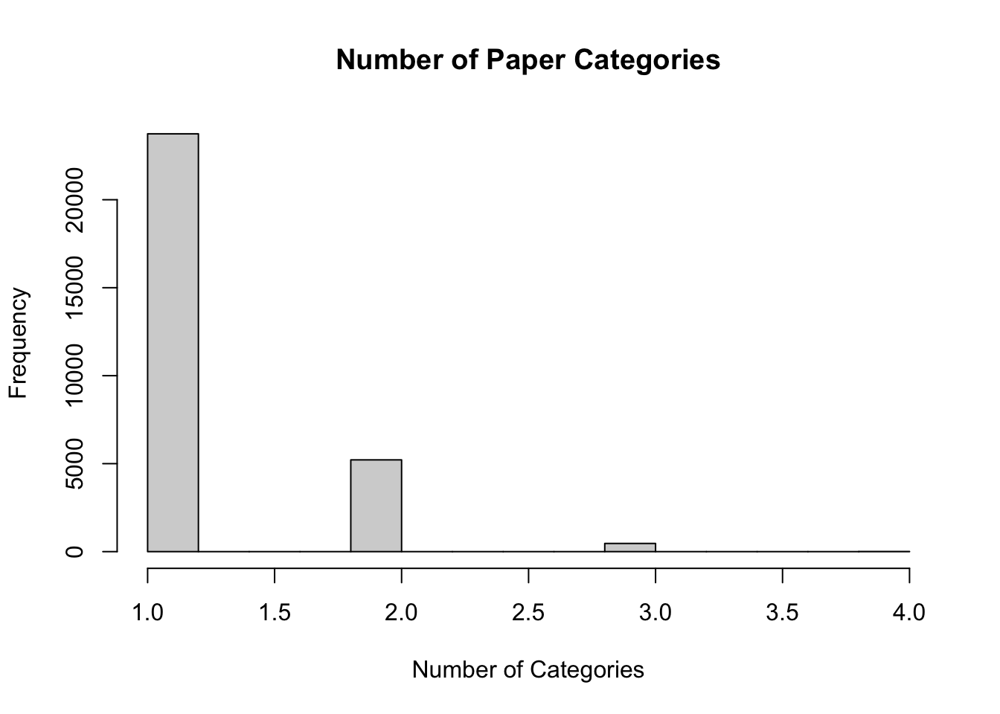
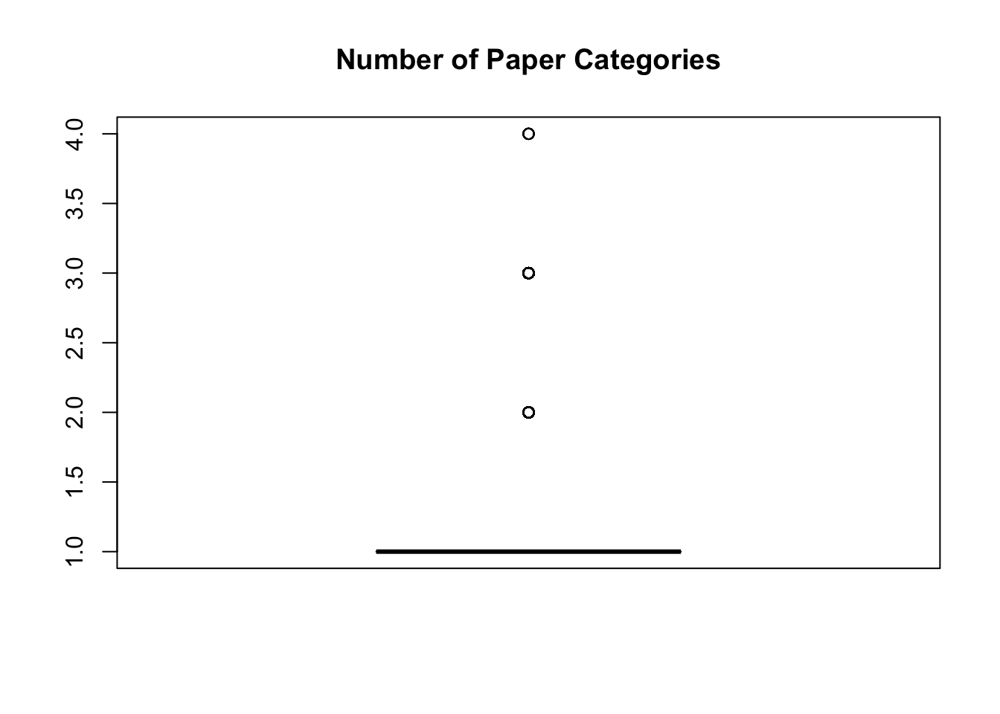

This will be my first attempt at participating in a Tidy Tuesday! This data is from the September 29, 2021.
As always, I need to load my packages first.
#package loading
library(tidyverse)#for data wrangling
library(wordcloud2) #for creating a word cloud
library(tidytext) #for text mining Next, I need to import the data. I had a little bit of trouble with this, as the tidytuesdayR package did not seem to be updated with this week’s data. I ended up needing to manually import everything instead.
#import data
papers <- readr::read_csv('https://raw.githubusercontent.com/rfordatascience/tidytuesday/master/data/2021/2021-09-28/papers.csv')
authors <- readr::read_csv('https://raw.githubusercontent.com/rfordatascience/tidytuesday/master/data/2021/2021-09-28/authors.csv')
programs <- readr::read_csv('https://raw.githubusercontent.com/rfordatascience/tidytuesday/master/data/2021/2021-09-28/programs.csv')
paper_authors <- readr::read_csv('https://raw.githubusercontent.com/rfordatascience/tidytuesday/master/data/2021/2021-09-28/paper_authors.csv')
paper_programs <- readr::read_csv('https://raw.githubusercontent.com/rfordatascience/tidytuesday/master/data/2021/2021-09-28/paper_programs.csv')
#joining data into one set
joined_df <- left_join(papers, paper_authors) %>%
left_join(authors) %>%
left_join(paper_programs) %>%
left_join(programs)%>%
mutate(
catalogue_group = str_sub(paper, 1, 1),
catalogue_group = case_when(
catalogue_group == "h" ~ "Historical",
catalogue_group == "t" ~ "Technical",
catalogue_group == "w" ~ "General"
),
.after = paper
)
#quick look at the new dataset
glimpse(joined_df)## Rows: 130,081
## Columns: 12
## $ paper <chr> "w0001", "w0002", "w0003", "w0004", "w0005", "w0006",…
## $ catalogue_group <chr> "General", "General", "General", "General", "General"…
## $ year <dbl> 1973, 1973, 1973, 1973, 1973, 1973, 1973, 1973, 1973,…
## $ month <dbl> 6, 6, 6, 7, 7, 7, 8, 9, 9, 9, 9, 9, 10, 10, 10, 10, 1…
## $ title <chr> "Education, Information, and Efficiency", "Hospital U…
## $ author <chr> "w0001.1", "w0002.1", "w0003.1", "w0004.1", "w0005.1"…
## $ name <chr> "Finis Welch", "Barry R Chiswick", "Swarnjit S Arora"…
## $ user_nber <chr> "finis_welch", "barry_chiswick", "swarnjit_arora", NA…
## $ user_repec <chr> NA, "pch425", NA, "pli669", "psm28", NA, NA, NA, "pli…
## $ program <chr> NA, NA, NA, NA, NA, NA, NA, NA, NA, NA, NA, NA, NA, N…
## $ program_desc <chr> NA, NA, NA, NA, NA, NA, NA, NA, NA, NA, NA, NA, NA, N…
## $ program_category <chr> NA, NA, NA, NA, NA, NA, NA, NA, NA, NA, NA, NA, NA, N…While it does not appear in the glimpse() output, viewing the overall data set showed many repeated rows. Each row contains only one author, so any paper that had more than one author is repeated until each other has its own row. The same appears to happening with any other variable that has more than one option per paper. I want to reduce these down so each paper has only one row.
To do this, I’m creating a function that will effectively reduce multiple data points of a certain variable (that will be grouped by some other variable) to one character string, each separated by “,”. I will then apply that function to each variable I want to include in my new data set.
#create function to reduce papers to one row each
to.reduce <- function(x, delim = ", ") { #name function and arguments
paste0(sort(unique(x)), collapse = delim) #combine unique character vectors and collapse with a comma and space in between each
}
new.dat <- joined_df %>% #creating a new object from the joined data
dplyr::group_by(paper) %>% #grouping by individual papers
dplyr::summarise(
authors = to.reduce(name), #reducing authors with above function
tot.auth = length(unique(name)), #create variable stating how many authors per paper
prog.cat = to.reduce(program_category), #reducing program categories with above function
tot.cat = length(unique(program_category)), #create variable stating how many categories per paper
progs = to.reduce(program_desc), #reducing program description with above function
title = unique(title), #including titles in new dataset
)
#check the new data set
dplyr::glimpse(new.dat)## Rows: 29,434
## Columns: 7
## $ paper <chr> "h0001", "h0002", "h0003", "h0004", "h0005", "h0006", "h0007"…
## $ authors <chr> "Robert William Fogel", "Michael R Haines", "Richard C Sutch,…
## $ tot.auth <int> 1, 1, 2, 2, 2, 1, 1, 1, 1, 2, 1, 1, 3, 1, 2, 1, 1, 1, 1, 2, 2…
## $ prog.cat <chr> "Micro", "Micro", "Micro", "Micro", "Micro", "Micro", "Micro"…
## $ tot.cat <int> 1, 1, 1, 1, 1, 1, 1, 1, 1, 1, 1, 1, 1, 1, 1, 1, 1, 1, 1, 1, 1…
## $ progs <chr> "Development of the American Economy", "Development of the Am…
## $ title <chr> "Second Thoughts on the European Escape from Hunger: Famines,…This looks much more manageable! I want to primarily use this new data set in my exploratory analysis. Now I can start checking out frequencies within the data set, as before the results would have been effected by the repeats in the set.
Next, I’ll do the same with paper categories.
#check the frequencies of total categories per paper
hist(new.dat$tot.cat, main = 'Number of Paper Categories', xlab = 'Number of Categories')
boxplot(new.dat$tot.cat, main = 'Number of Paper Categories')
Similarly, the bulk of papers had limited categories, usually one, but a couple had more (no more than 4).
Since I haven’t done much work with text data before, I wanted to have fun with this data set, and decided to make some word clouds showing what the most common words were in paper titles. This required some looking to understand how to get the data into a format I needed, but allowed me to find the book Text Mining with R, which can be found here!
In order to create a word cloud, I need to unnest the titles into individual tokens so I have one taken per row in a new data set. I then need another column with the corresponding counts of each word. Finally, I will have the words sorted with highest counts at the top.
titlefreq <- #set name of new object
new.dat %>%
select(title) %>% #using title column of previous dataset to find words
unnest_tokens(word, title) %>% #split titles into individual words, put those words into 'word' column
count(word, sort = TRUE) #take count of each word, put into 'count' column, sort from highest countLooking at this list, it looks like stop words generally have the highest counts. I’m not interested in those for my word cloud, so I need to remove them. While I’m at it, I also want to remove any numbers there may be from the titles.
titlefreq2 <- titlefreq %>%
filter(!word %in% pull(stop_words, word)) %>% # remove all stop words
filter(!str_detect(word, '[0-9]')) # remove 'words' including numbers
glimpse(titlefreq2)## Rows: 12,336
## Columns: 2
## $ word <chr> "evidence", "market", "policy", "effects", "trade", "capital", "l…
## $ n <int> 3171, 1555, 1555, 1433, 1217, 1114, 1101, 1092, 1062, 1029, 1015,…wordcloud2(titlefreq2, size = 0.75)I’m really happy with how this turned out, particularly because it’s interactive! I can run my cursor over a word and see how many times it occurred in the titles.
I’m interested in seeing if there are differences in the major title words in each category. First, I need to see what categories I should use!
#view categories
print(unique(new.dat$prog.cat)) ## [1] "Micro" "Macro/International, Micro"
## [3] "" "Macro/International"
## [5] "Finance" "Finance, Macro/International"
## [7] "Finance, Micro" "Finance, Macro/International, Micro"I’m going to focus on just the individual categories, so I’ll create data sets with unnested title words for the categories ‘Micro’, ‘Finance’, and ‘Macro/International.’
#title words in micro category
titlefreqmicro <- new.dat %>%
filter(prog.cat == 'Micro') %>%
select(title) %>%
unnest_tokens(word, title) %>%
count(word, sort = TRUE) %>%
filter(!word %in% pull(stop_words, word)) %>%
filter(!str_detect(word, '[0-9]'))
#title words in finance category
titlefreqfinance <- new.dat %>%
filter(prog.cat == 'Finance') %>%
select(title) %>%
unnest_tokens(word, title) %>%
count(word, sort = TRUE) %>%
filter(!word %in% pull(stop_words, word)) %>%
filter(!str_detect(word, '[0-9]'))
#title words in macro/international category
titlefreqmacro <- new.dat %>%
filter(prog.cat == 'Macro/International') %>%
select(title) %>%
unnest_tokens(word, title) %>%
count(word, sort = TRUE) %>%
filter(!word %in% pull(stop_words, word)) %>%
filter(!str_detect(word, '[0-9]'))Now that I have the title words broken down into category, I can create my new wordclouds!
There are definitely differences in the different categories! A lot of the words show up in all three categories, but in different amounts. Evidence seems to be the most common in the micro category as well as overall. Finance and Macro/International seem to be a little more spread out, with Finance seeing high amounts of “risk,” “market,” and “evidence,” and Macro/International seeing “policy,” “trade,” and “exchange” in large numbers.
This was challenging, as I needed to learn a lot of new skills to get to the end point, but I thought this would be a really interesting way to visualize the data, and it certainly didn’t disappoint!
As a note to anyone interested in replicating this or using the wordcloud2 package - showing more than one wordcloud in the document got a little tricky. I found that everything would show up no problem in the .Rmd document, but when I tried to knit to HTML, only the first one appeard; the other three showed up as large white blank spaces. After a lot of fiddling and searching, I found that others had the same problem when using more than one wordcloud in their documents. Here is the issue on GitHub. In the end, installing devtools::install_github("gaospecial/wordcloud2") got all four of my wordclouds to show up.
This week involved some serious practice in troubleshooting and creative problem solving! I hope to participate in Tidy Tuesday every week so some extent from now on to continue getting this sort of practice and experience.